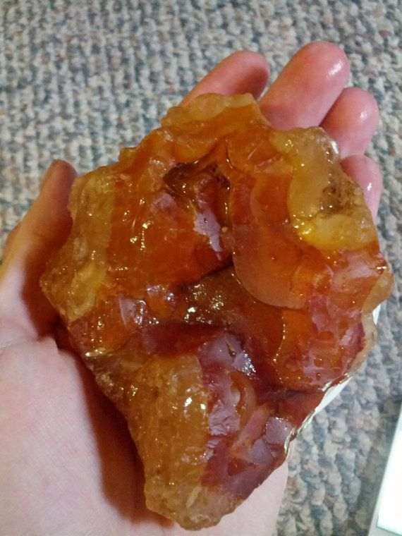

New here?

New to rockhounding and don't know where to start? Not to worry, we will show you the ropes. Click below to head over to our "Getting Started" guide
Getting StartedRocks & Minerals In Oregon


Oregon has some amazing rockhounding to offer.
Sponsored Dig Site

Own a digsite you would like to advertize in Oregon? Contact us for more information about being our sponsor of the month! Email sponsors@rockhounding.org for more information.
Dig With UsPopular Rocks In Oregon
-
Jasper
Jasper is a versatile gemstone with a variety of colors, and Oregon is well-known for its high-quality green jasper.
Read More -
Sunstone
Oregon sunstone, known for its unique iridescent colors, can be found in the southeastern part of the state.
Read More -
 Quartz
QuartzQuartz is a versatile clear crystal found in many locations throughout Oregon, including the Cascade Mountains.
Read More -
Thundereggs
Thundereggs, which are unique geological formations containing mineral deposits, can be found in various locations across Oregon.
Read More -
Holley Blue Agate
Holley Blue agate is a rare and beautiful blue gemstone found in the Holley area of Oregon.
Read More -

Carnelian
Carnelian is a striking red gemstone that can be found in various locations throughout Oregon.
Read More
Popular Areas In Oregon
-
 Dust Devil Sunstone Mine
Dust Devil Sunstone MineThe Dust Devil Sunstone Mine in Plush, Oregon is a popular destination for rockhounds looking to find Oregon sunstones.
Read More -
 Richardson's Rock Ranch
Richardson's Rock RanchRichardson's Rock Ranch in Madras, Oregon is a favorite among rock enthusiasts, offering opportunities to dig for thundereggs and other minerals.
Read More -
 Lucky Strike Mine
Lucky Strike MineThe Lucky Strike Mine in Mitchell, Oregon offers a unique experience for rock collectors looking to mine their own gemstones, such as jasper, agate, and quartz.
Read More -
 Ochoco National Forest
Ochoco National ForestOchoco National Forest in Central Oregon is known for its abundance of rockhounding sites, with a variety of minerals and crystals such as quartz, agate, and jasper available to collectors.
Read More -
 Glass Butte
Glass ButteGlass Butte, located in Central Oregon, is a popular site for collecting various types of obsidian, a volcanic glass prized for its beauty and rarity.
Read More
Geology of Oregon
Oregon's diverse geology is the result of millions of years of geological processes, including volcanic activity, tectonic movements, and erosion. The state's geologic history can be traced back more than 200 million years ago to the Mesozoic Era when the western margin of North America began to interact with the Pacific Oceanic Plate.
During the Jurassic and Cretaceous periods, subduction of the oceanic plate under the North American continent led to the formation of volcanic island arcs and the accretion of marine sedimentary rocks. The ancestral Klamath and Blue Mountains in eastern Oregon are remnants of these ancient island arcs.
In the late Cretaceous and early Tertiary periods, Oregon experienced extensive volcanic activity. The Cascade Range, a volcanic arc extending from northern California to British Columbia, began to form during this time. Oregon's iconic Crater Lake is an example of a volcanic caldera formed by the collapse of Mount Mazama about 7,700 years ago.
Over millions of years, erosion and sedimentation shaped Oregon's landscape further. The formation of the Columbia River Basalt Group, one of the largest flood basalt provinces in the world, occurred between 17 and 6 million years ago. These extensive lava flows covered parts of Oregon, Washington, and Idaho, and are responsible for the region's distinctive basalt cliffs and plateaus.
In the Pleistocene Epoch, starting around 2.6 million years ago, glacial activity played a significant role in shaping the state's topography. Glaciers carved out valleys and deposited sediments, while the periodic flooding of glacial Lake Missoula led to the formation of the Columbia River Gorge. Oregon's geology continues to evolve today, with ongoing volcanic activity and tectonic movements shaping its landscape and providing valuable resources for rockhounds and geologists alike.